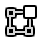

物体模式¶
模式选择菜单。¶
模式 是面向对象的特性，这意味着可用模式种类取决于所选活动物体的类型——大多数模式仅启用默认 物体模式 (如相机，灯光等)。
每种模式都旨在编辑所选对象的某个方面。 见下表 Blender的模式 以获取详细信息。
You set the current mode in the Mode selector of 3D Viewport header (see Fig. 模式选择菜单。).
在Blender中模式可以影响许多事情：
They can modify the panels and/or controls available in some Properties tabs.
They can modify the behavior of the whole editor, like e.g. the UV Editor and 3D Viewport.
可以修改可用的标题栏工具(菜单和/或菜单条目，以及其他控件……)。 例如，在3D视图中，物体模式中的 物体 菜单，在编辑模式中更改为 网格 菜单(需带有活动网格对物体！)，在顶点绘制模式中则是 绘制 菜单……
可以修改可用的快捷方式。
物体模式列表¶
图标 |
名称 |
细节 |
|---|---|---|
默认模式,，适用于所有的物体类型，专用于 物体 数据块的编辑(比如位置/旋转/大小)。 |
||

|
该模式适用于所有的可渲染的物体类型, 它专用于物体的“形状” 物体数据 数据块的编辑(比如网格中的顶点/边/面，曲线/曲面中的控制点，蜡笔中的笔画/点等等)。 |
|
仅适用于网格，用于启用Blender的3D网格雕刻工具。 |
||
仅适用于网格，允许设置网格顶点色 (即“绘制”它们)。 |
||
仅适用于网格，专用于编辑顶点组权重。 |
||
仅适用于网格，用于在3D视图中的模型上直接绘制网格纹理。 |
||
仅适用于网格，专用于粒子系统，适用于可编辑系统(毛发系统)。 |
||
仅适用于骨架，专用于编辑骨架姿势。 |
||
仅适用于蜡笔，专用于编辑蜡笔笔画。 |
Note
游标在 绘制与雕刻模式 会变成一个笔刷。
We will not go into any more detail on mode usages here, because they are dealt with in their own sections.
Hint
若阅读本手册时，手册中提到的一些按钮和菜单选项没有出现在屏幕上, 可能是尚未处于该选项有效的正确模式下。
多物体编辑¶
编辑模式和姿态模式支持同时编辑多个物体。
这便于同时对多个物体执行相同的编辑，或者同时动画化多个角色。
要同时编辑多个物体，只需选择多个物体并进入该模式。
The Outliner can also be used to add/remove objects while you are in a mode, by setting or clearing the mode from the context menu, or Ctrl-LMB clicking on the objects data icon.
只有活动物体才会用于显示形态键，UV图层等属性。
从物体中选择任何元素都会将其设置为活动对象。
在多物体上可使用的操作类型有限制。
例如，不能将不同物体的顶点作为端点创建边。